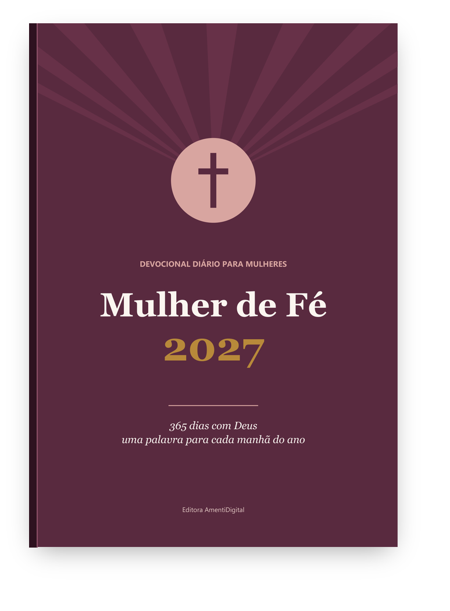
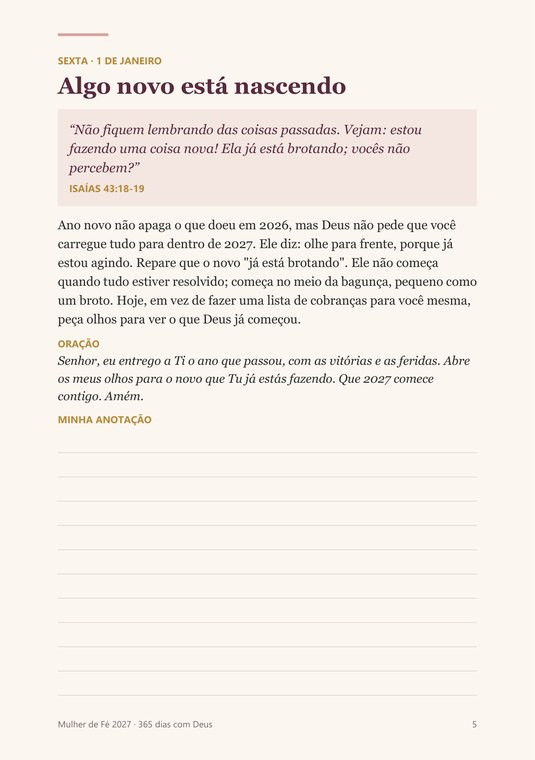
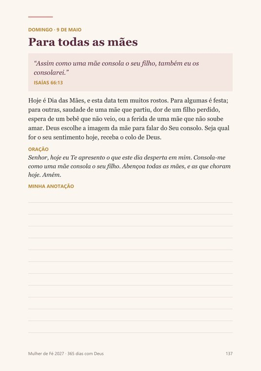
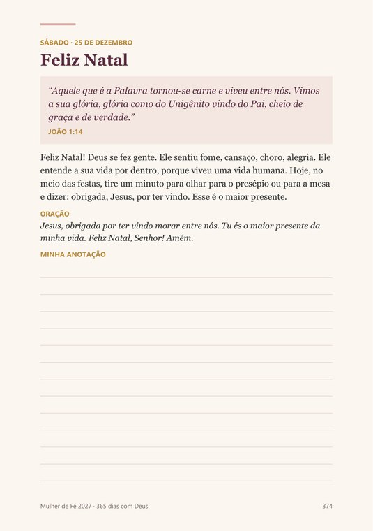
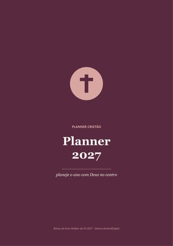
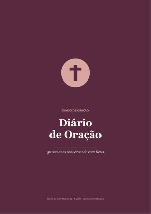

Mulher de Fé 2027 é um devocional de 365 dias com uma página por dia: um versículo, uma reflexão curta, uma oração e espaço para anotar. Menos de 5 minutos, antes do dia te engolir.
Quero o meu devocionalPDF · a partir de R$ 14,90 · acesso imediato por e-mail · 7 dias de garantia
“As misericórdias do Senhor se renovam a cada manhã; grande é a tua fidelidade.”LAMENTAÇÕES 3:22-23

Casa, trabalho, filhos, contas, as pessoas que dependem de você. A lista começa antes mesmo de você levantar da cama, e o tempo com Deus vai ficando para depois.
Este devocional foi feito para caber nessa rotina real:
Um versículo para ler devagar
Curta, de mulher para mulher
Um começo para você continuar
O que Deus falou com você hoje
Deixar o ano velho para trás e receber o novo de Deus.
Quem Deus diz que você é, acima do espelho e das opiniões.
Descansar em Deus e caminhar com Jesus até a Páscoa.
Esperar em Deus quando a resposta demora.
Cuidar da casa e de quem amamos com sabedoria e graça.
Amar bem, casada ou solteira.
Coragem para atravessar cada batalha com Deus por perto.
Sua rotina, dentro ou fora de casa, é lugar de chamado.
Sabedoria, contentamento e fé para lidar com o dinheiro.
Relações curadas pela graça e um coração sem mágoas.
Enxergar a bondade de Deus em cada detalhe.
Celebrar Jesus e fechar o ano olhando para a fidelidade de Deus.




Calendário do ano, metas espirituais e pessoais e uma página por mês para planejar com oração. 27 páginas para imprimir.
Valor: R$ 17Plano de leitura dia a dia, Antigo e Novo Testamento, com caixinhas para marcar. Combina com o devocional.
Valor: R$ 9
Pedidos, respostas, gratidão e versículos guardados no coração. 57 páginas para imprimir e preencher.
Valor: R$ 12Só o devocional
Devocional + 3 bônus
Tudo isso valeria R$ 67
Os dois planos têm garantia de 7 dias: se não for para você, devolvemos 100%.
Leia os primeiros dias e veja se é para você. Se não gostar, por qualquer motivo, peça o reembolso em até 7 dias pela própria plataforma de pagamento e devolvemos 100% do valor.
Não. É um PDF. Você lê no celular, no tablet ou no computador, e pode imprimir se preferir.
Logo depois da confirmação do pagamento você recebe o acesso por e-mail. No Pix, costuma ser na hora.
O Essencial traz só o devocional de 365 dias. O Kit Completo traz o devocional e mais três materiais para imprimir: o Planner 2027, o plano de leitura da Bíblia em 1 ano e o Diário de oração.
Pode. Cada página tem a sua data, então você começa no dia de hoje e segue. Não precisa “pagar” os dias que passaram.
De nenhuma em especial. É cristão, sem denominação, baseado só na Bíblia.
Menos de 5 minutos. É uma página só. Se quiser ir além, abra a sua Bíblia e leia o capítulo do versículo.
Serve. Você pode imprimir e encadernar para dar de presente no Natal ou no Ano Novo.
Você tem 7 dias de garantia. Pede o reembolso pela plataforma e recebe 100% de volta.